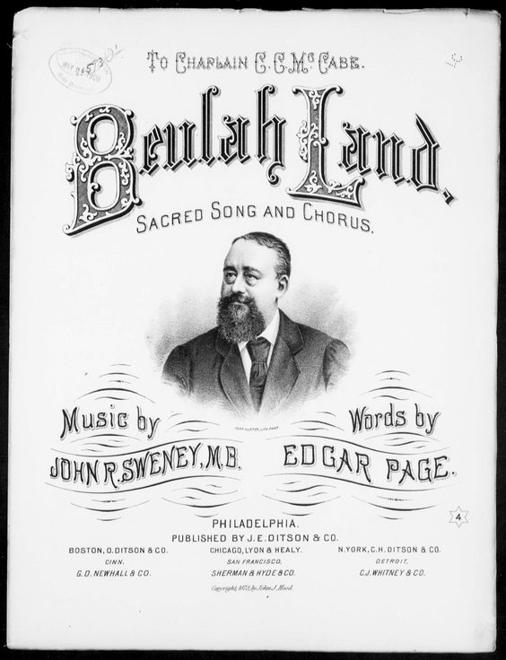

1203 189 O Beulah Land
(I've reached the land of corn and wine) 天城美景 (居榮美之地 ) 榮美福地
|
|
|
|
1 I’ve reached the land of corn and wine,
And all its riches freely mine;
Here shines undimmed one blissful day,
For all my night has passed away.
Chorus:
O Beulah Land, sweet Beulah Land,
As on thy highest mount I stand,
I look away across the sea,
Where mansions are prepared for me,
And view the shining glory shore,
My Heav’n, my home forevermore!
2 My Savior comes and walks with me,
And sweet communion here have we;
He gently leads me by His hand,
For this is Heaven’s borderland. (Chorus)
3 A sweet perfume upon the breeze
Is borne from ever-vernal trees;
And flow’rs that never fading grow
Where streams of life forever flow. (Chorus)
4 The zephyrs seem to float to me,
Sweet sounds of Heaven’s melody,
As angels with the white-robed throng
Join in the sweet redemption song. (Chorus)
Source: Hymns
of Faith #517 |
Bb 調 4/4
- 前在埃及為罪奴僕，備嘗罪中苦味；
鐵爐火熱，重軛難當，魔力殊可畏。
時常嘆息，欲脫不能，黑暗權勢蒙蔽。
可憐從未曾知榮美福地。
- 賴羔羊血得出埃及，面前紅海分開，
茫茫曠野，迷我眼目，環境可怕哉！
信心軟弱，時發怨言，內外仇敵攻擊，
飄流無定，未進榮美福地。
- 約但河邊迦南美地，我心羡慕已久；
因信渡河，勇遵主命，河水竟倒流。
欣登彼岸美妙樂土，時常流奶與蜜，
哈利路亞！樂居榮美福地！
- 任他風濤奔騰澎湃，於我究有何害？
一切事上，得勝有餘，仰賴主恩愛；
耶利哥城不戰自陷，主話大有能力，
高唱凱歌，聲遍榮美福地。
- 此地福日常是高升，路徑滴下脂油；
春光華麗，景物鮮明，百果慶豐收。
意外平安，無窮歡喜，永享更美安息，
讚頌主恩，賜我榮美福地。
副歌： 今我居巍巍高山，在光天化日之下；
我飲於滾滾活泉，此泉長流不息。
樂哉！有嗎哪為我筵席，取之不盡用不竭，
樂哉！今我居榮美福地。 |
|

https://www.lifesongs.cn/hymns/s693/

https://hymnary.org/hymn/FHOP/page/437
|
| |
|
https://youtu.be/NX5raP9qXxo
I've Reached the Land of Corn and Wine (O Beulah Land) · Table Singers
https://youtu.be/vPuX7D2qWnY
進迦南 DEWELLING IN BEULAH LAND(演奏曲七)
https://youtu.be/hFDQXXY2mbQ
A04 居榮美之地 new_A4

https://dianaleaghmatthews.com/beulah-land/?relatedposts_hit=1&relatedposts_origin=3260&relatedposts_position=0&relatedposts_hit=1&relatedposts_origin=3260&relatedposts_position=0&relatedposts_hit=1&relatedposts_origin=3260&relatedposts_position=0#.YJ_K66gzbIU
I have a dear friend that is named Beulah. Every time I see her she ask me to
sing her song for her. When she first asked I was taken aback by this
question and discovered there is not just one song about Beulah land. No, in
actuality there a handful of songs about Beulah land. So this month we’re
going to explore each of these music pieces.

Beulah Land was originally a hymn written by Edgar Page Stites. Sadly,
this is not a hymn that is sung in churches today.
The hymn derives from the King James Version of Isaiah 62:4; “Thou shalt no
more be termed Forsaken; neither shall thy land any more be termed Desolate;
but thou shalt be called Hephzibah and
thy land Beulah;
for the LORD delighteth in thee, and thy land shall be married.”
Stites was born on March 22, 1836 and accepted Christ at the age of 19 during
the great revival of Philadelphia. Soon afterward, he became a lay pastor
with the Methodist church. He also worked in the South Jersey area as a home
missionary.
In 1869, he and a group of other ministers founded the Ocean Grove Camp
Meeting Association. By 1875, the camp was very active and had such notable
hymn writers as Ira
Sankey, Fanny
Crosby, Eliza Hewitt, William H. Doane and William Kirkpatrick in regular
attendance.
Stites stated that “It was in 1876 that I wrote ‘Beulah Land.’ I could write
only two verses and the chorus, when I was overcome and fell on my face. That
was one Sunday. On the following Sunday I wrote the third and fourth verses,
and again I was so influenced by emotion that I could only pray and weep. The
first time it was sung was at the regular Monday morning meeting of Methodists
in Philadelphia. Bishop McCabe sang it

John R. Sweeney
to the assembled ministers. Since then it is known wherever religious people
congregate. I have never received a cent for my songs. Perhaps that is why
they have had such a wide popularity. I could not do work for the Master and
receive pay for it.”
John R. Sweeney, the camp song leader, composed the music for this hymn.
In his memorir, Sankey provided the same recollection of the hymn. “The
secretary of the Young Men’s Christian Association at Plymouth,
England, wrote me a beautiful story of a young lady, who sang [this song] on
her dying bed as she passed into the land that is fairer than day.”
He went on to provide a second memory, “I sang this favorite song over the
dead body of my friend, Mr. Sweney, at the church of which he was a leading
member, in West
Chester, Pennsylvania, on the day of his burial.”
Stites also wrote other hymns such as Simply
Trusting Every Day. He died on Jan. 7, 1921.
|
專題報導：第196首 榮美福地 Dwelling in Beulah Land |
|
|
|
讚美詩源考小組策劃丁春芳撰稿
曲調名：BEULAH LAND，i
作詞、作曲者：C. Austin Miles, 1868-1946
第一節譜例：前在埃及為罪奴僕，備嘗罪中苦味，
Far away the noise of strife upon my ear is falling,
本詩又名「住在佳美聖城」。
本詩詞、曲均為麥爾斯（C. Austin Miles,
1868-1946）所作，當他在16歲時，原想接受教牧的訓練，但是為環境所逼，不得已攻讀藥劑師，畢業後在藥房工作。他勤讀聖經，在1892年他寫了第一首聖詩，獲得眾人的讚賞。他意識到這是神要他以詩歌來為主作見證，於是他努力編寫聖詩。1898年他受聘於一家宗教音樂的出版公司為全職編輯達三十七年之久，編寫並推廣福音聖詩事工，而他自己也成為教會與佈道會著名的音樂指揮。
除本詩外，他另有一首膾炙人口的
〈在花園裡〉（收錄於本會第407首），也深受基督徒的喜愛。其他創作的著名聖詩尚有
〈更加甘甜〉（Still
Sweeter Everyday）、
〈主耶穌若同行〉（If Jesus Goes with Me）等。
本詩寫於1911年。
本詩創作源於《以賽亞書》六十二章4節：「你必不再稱為撇棄的；你的地也不再稱為荒涼的。你卻要稱為我所喜悅的；你的地也必稱為有夫之婦。因為耶和華喜悅你，你的地也必歸他。」
註：曲調名──BEULAH LAND，Beulah是為朝聖者休息的地方。
|
|
https://wordwisehymns.com/2013/11/01/dwelling-in-beulah-land/
 C. Austin Miles
C. Austin Miles
Dwelling in Beulah Land
Words: Charles Austin Miles (b. Jan. 7, 1868; d. Mar. 10, 1946)
Music: Charles Austin Miles
Links:
Wordwise Hymns (Austin Miles)
The Cyber Hymnal
Note:
This 1911 gospel song comes for the pen of C. Austin Miles, a former
pharmacist, turned hymn writer and gospel music publisher. Elsewhere on this
blog, some of his other songs are treated: In the Garden, A New Name in Glory,
and the little chorus Wide, Wide as the Ocean.
The Cyber Hymnal lists quite a number of gospel songs that
speak of living in “Beulah” (e.g. Beulah Land, by Edgar Stites). So, what does
that mean? And where does that expression come from?
To deal with the latter question first, the word Beulah is used once only in our
English Bibles (though the Hebrew word by’ulah is used a dozen or so times of
aspects of the marriage relationship). In English, it is found in a prophecy of
Isaiah, reassuring the nation of Israel and the city of Jerusalem that the time
of God’s chastening will not last forever.
“You shall no longer be termed Forsaken, nor shall your land any more be termed
Desolate; but you shall be called Hephzibah [meaning: My delight is in her], and
your land Beulah [by’ulah, married one]; for the LORD delights in you, and your
land shall be married [by’ulah] (Isa. 62:4).
The imagery pictures the time when the Messiah will come to reign. It describes
the joy and contentment of the people at that time, in the intimacy of their
relationship with the Lord, and His tender affection for them. The prophecy goes
on later to say:
Indeed the LORD has proclaimed to the end of the world: “Say to the daughter of
Zion, ‘Surely your salvation is coming; behold, His reward is with Him, and His
work before Him.’ And they shall call them The Holy People, The Redeemed of the
LORD; and you shall be called Sought Out, A City Not Forsaken’ (Isa. 62:11-12).
So, how does this prophecy, which is clearly about the nation of Israel, apply
to Christians today? Some seek to blend Old Testament and New to the point that
there is no real distinction between Israel and the church. But I don’t believe
we should do that. Israel is not the church, and the church is not Israel.
The nation of Israel is God’s earthly people, with a land and an earthly throne
of their own. The church is God’s heavenly people (Phil. 3:20), the spiritual
body of Christ made up of all nations. Therefore, the above prophecy can only be
applied to Christians today in a secondary and illustrative way. And this must
be done with caution, not annulling the original meaning and application of the
words.
God’s stated purpose for Israel was to bring them out of bondage in Egypt, and
take them to the land of Canaan, a land that He had promised to their fathers
Abraham, Isaac, and Jacob. “He brought us out from there, that He might bring us
in, to give us the land of which He swore to our fathers” (Deut. 6:23).
That deliverance from bondage into freedom and blessing is analogous to the
salvation of sinners today. Our “Canaan” (or “Beulah”) is the abundant Christian
life, a life of peace and victory, that Christ came to provide for us (Jn.
10:10). A few hymns picture Canaan as heaven, but that does not fit as well.
(The Israelites still had many battles to fight in Canaan.) Miles does not make
that mistake.
Austin Miles pictures the Christian as separated from the
world,
in a moral and spiritual sense, blessed as He is by fellowship with
God. But notice that, in treating the word Beulah in that figurative way, he
makes an anachronistic error. The people of Israel were not “feasting on the
manna” in Canaan. That provision ceased when they entered the Promised Land
(Josh. 5:12).
Given these caveats and limitations, the song expresses joy in the believer’s
union with Christ, and his eternal safety in Him.
CH-1) Far away the noise of strife upon my ear is falling.
Then I know the sins of earth beset on every hand.
Doubt and fear and things of earth in vain to me are calling.
None of these shall move me from Beulah Land.
I’m living on the mountain, underneath a cloudless sky.
I’m drinking at the fountain that never shall run dry.
O yes! I’m feasting on the manna from a bountiful supply,
For I am dwelling in Beulah Land.
CH-2) Far below the storm of doubt upon the world is beating.
Sons of men in battle long the enemy withstand.
Safe am I within the castle of God’s Word retreating.
Nothing then can reach me–‘tis Beulah Land.
Questions:
1) Do you believe this is an appropriate and meaningful use of Old Testament
prophecy?
2) How can the Christian manage to be in the world, and a witness there, without
being of the world (in the bad sense of the word worldly–cf. I Jn. 2:15)?
Links:
Wordwise Hymns (Austin Miles)
The Cyber Hymnal
https://austinbhebe.wordpress.com/2012/08/26/o-beulah-land-sweet-beulah-land/
“Beulah Land”
About the Hymn: “Beulah Land” is a song whose text was written by
Edgar Page Stites, who was born on Mar. 22, 1836. Stites frequently used the
pseudonym “Edgar Page” and he died on Jan. 7, 1921. He produced several hymns,
including “Simply Trusting Every Day.” The tune for “Beulah Land” was composed
by John Robson Sweney (1837-1899). The hymn was written over a two week period
in 1876. Stites only managed to write two verses and the chorus the first
Sunday and got overwhelmed with the message of his hymn and fell on his face in
prayer. On the following Sunday he wrote the third and fourth verses, and
again he was so influenced by emotion that he could only pray and weep. The
first time the hymn was sung was at the regular Monday morning meeting of
Methodists in Philadelphia-Pennsylvania. A certain Bishop McCabe sang
it to the assembled ministers and since then, the hymn has been a beloved of
many. It is said that Stites never received any payments for his songs.
Perhaps that is why they have had such a wide popularity. Sitites often
said that he could not do work for the Master and receive pay for it. The song
poetically describes many of the blessings that God’s people have today.
Throughout the Old Testament, there are many prophecies concerning the coming of
the Messiah, the establishment of His spiritual kingdom or church, and the
nature of His people under the new covenant. One such prophecy is the one listed
in the Isaiah 62: 4 text. In this context, Isaiah is talking about Jerusalem.
The prophet here is using the physical city of Jerusalem as a prophetic symbol
of the spiritual Jerusalem to be ushered in by the Messiah. He foretells how
that the Gentiles will see its righteousness and it shall be called by a new
name, which is usually understood to be a prophecy of the fact that after the
gospel began to be preached to the Gentiles, God’s people would be called by the
new name of Christians. And then we have the statement saying that Jerusalem
would no more be called Forsaken and Desolate but Hephzibah (“my delight”) and
Beulah (“married”). The point being made apparently is that because of its
sinfulness, God’s chosen city of Jerusalem in the Old Testament became forsaken
and desolate, but under the new covenant of the Messiah, that spiritual entity
for which Jerusalem stood will not be forsaken and desolate like Jerusalem of
the Old Testament but will be God’s delight and married to the Lord.
Couple of comments on the lyrics:
“I’ve
reached the land of corn and wine: A clear message of relief as we
have arrived at the land of all riches and they are all freely mine. All my
nights have passed away and joy awaits me. These spiritual riches are
symbolized as “corn and wine.” Wine in the Bible does not have to be alcoholic.
And throughout the Old Testament, corn or grain and wine are used to represent
the great blessings that God has provided for His people: Deut. 7.13, Psa. 4.7,
Joel 2.19. Hence, “land of corn and wine” is not even referring to physical
grain and literal wine, either alcoholic or non-alcoholic, but simply represents
the great riches that God’s people have in Christ: Rom. 11.33.
“Here shines undimmed one blissful day, For all my night has passed away.” This
might make some think immediately of heaven where there will be no night, but
the fact is that even here, in Christ we have the inheritance of light because
we have been delivered from the power of darkness: Col. 1.12-13. In truth, the
blessings that we shall enjoy perfectly in heaven are received to a lesser
degree even here on earth.
“My Savior comes and walks with me, And sweet communion here have we; In
these words we’re told that we have fellowship with the Saviour. He gently leads
me by His hand, For this is heaven’s borderland.” While Jesus obviously does
not walk literally with us as He did on earth nearly 2000 years ago, He has
promised that as long as we follow Him, He will abide with us and dwell in us:
Matt. 28.18-20, Eph. 3.17. As we walk in His light, we have fellowship or
communion with Him: 1 Jn. 1.5-7. And in so doing, He leads us by His hand in
the strait and narrow way that leads to everlasting life: Matt. 7.13-14
“A sweet perfume upon the breeze Is borne from ever-vernal trees, And flowers
that, never-fading, grow Where streams of life forever flow.” Here
we have the assurance that we have life. I can smell the perfume of a
beautiful land even before I step a foot there. As perfume borne by the wind
from budding trees and the sight of flowers growing are signs of life: Gen.
1.11-12, so is Jesus Christ who came to bring us spiritual life: Jn. 10.10.
And when we are crucified with Christ, we can find the life that is in Him:
Gal. 2.20.
“The zephyrs seem to float to me Sweet sounds of heaven’s melody,
As angels with the white-robed throng Join in the sweet redemption song.” Here
we have the hope of heaven. Zephyrs are soft, southerly breezes which bring
pleasant weather–cf.: Acts 27.13. These metaphorical zephyrs figuratively bring
to us sweet sounds of heaven’s melody because of all the blessings that God’s
people have through Christ in His spiritual kingdom, the greatest is the earnest
expectation of an eternal home in heaven forever with the Lord: 1 Pet. 1.3-5.
Thus, in the Bible, we are given a glimpse of the angels with the white-robed
throng to “whet our appetite” as it were for this home: Rev. 7.9-17, 21.1-4.
https://en.wikipedia.org/wiki/Dwelling_in_Beulah_Land
From Wikipedia, the free encyclopedia
Jump to navigationJump
to search
|
Dwelling in Beulah Land |

"The Land of Beulah" (1874) by H. Melville
|
|
Genre |
Hymn |
|
Written |
1911 |
|
Based on |
Isaiah 62:4 |
|
Meter |
14.13.14.10 with refrain |
Dwelling in Beulah Land is a hymn written
and composed by C.
Austin Miles who also wrote and composed "In
the Garden". The song was published in 1911.[1] It
was used as the Fijian
anthem.
https://seeingsunshine.com/2015/04/24/dwelling-in-beulah-land/
If you’ve heard this song before, you know it is upbeat. I think that’s one of
the biggest reasons why I enjoy it so much — it’s happy and uplifting.
Here are the lyrics.
Far away the noise of strife upon my ear is
falling;
Then I know the sins of earth beset on every
hand;
Doubt and fear and things of earth in vain to
me are calling;
None of these shall move me from Beulah Land.
Refrain:
I’m living on the mountain, underneath a
cloudless sky, (Praise God!)
I’m drinking at the fountain that never shall
run dry;
Oh, yes! I’m feasting on the manna from a
bountiful supply,
For I am dwelling in Beulah Land.
Far below the storm of doubt upon the world
is beating,
Sons of men in battle long the enemy
withstand;
Safe am I within the castle of God’s Word
retreating;
Nothing then can reach me—’tis Beulah Land.
Let the stormy breezes blow, their cry cannot
alarm me;
I am safely sheltered here, protected by
God’s hand;
Here the sun is always shining, here there’s
naught can harm me;
I am safe forever in Beulah Land.
Viewing here the works of God, I sink in
contemplation;
Hearing now His blessed voice, I see the way
He planned;
Dwelling in the Spirit, here I learn of full
salvation;
Gladly I will tarry in Beulah Land.
The first thing we probably think is, “What is Beulah Land?” or “Where is Beulah
Land?” Most assume it means Heaven. I know that’s what I thought. But the word
Beulah is only found once in the Bible in Isaiah 62.
Here it is in the New
International Version.
No longer will they call you Deserted, or name your land Desolate. But you
will be called Hephzibah, and your land Beulah;
for the Lord will
take delight in you, and your land will be married. -Isaiah 62:4
Here it is with a little more context from The
Message.
Foreign countries will see your righteousness, and world leaders your glory.
You’ll get a brand-new name straight from the mouth of God.
You’ll be a stunning crown in the palm of God’s
hand, a jeweled gold cup held high in the hand of your God. No more will
anyone call you Rejected, and your country will no more be called Ruined.
You’ll be called Hephzibah (My Delight), and your land Beulah (Married),
Because God delights
in you and your land will be like a wedding celebration. For as a young man
marries his virgin bride, so your builder marries you, And as a bridegroom is
happy in his bride, so your God is happy with you. -Isaiah 62: 2-5
Beulah,
according to the Encyclopedia of the Bible, means
married. It indicates the delight the Lord will have in His land with
His people in its future state of blessing. This marriage relationship is used
to portray God’s relationship with His people. Have you heard the analogy of
Christ being the groom and the church being the bride? Beulah
land is married land.
In this passage in Isaiah, it’s talking about God’s chosen people – Israel.
Israel had been in a state of forlorn being called Desolate and Deserted. And
yet, God chose to call her His spouse, a great honor. Before, Israel was like a
woman being divorced or left as a widow. But God would change that. He would
return with His mercy.
Matthew Henry’s Commentary states, “Instead of those two names of reproach, she
shall be called two honorable names.”
-
Hephzibah,
which means My
Delight is in Her. Hephzibah was the name of Hezekiah’s queen,
Manasseh’s mother from 2 Kings 21:1. The commentary says it is, “a proper name
for a wife who ought to be her husband’s delight.”
-
Beulah,
which means married.
Matthew Henry’s Commentary talks about Isaiah 54:1 and Psalm 113:9.
“Thy land shall be married, that is, it shall become fruitful again, and be
replenished. Though she has long been barren, she shall again be peopled,
shall again be made to keep house and to be a joyful mother of children.”
“I am safe forever in Beulah land” the hymn says. Marriage
is a forever commitment — married land is a forever covenant. I’m very
happy to learn that Beulah doesn’t mean Heaven, but married. Now that I am
married, I see the commitment and covenant it truly is. And I also see what a
joy it can be to be married. But married to God? That’s a whole other level of
joy!
This hymn isn’t talking
about being with God once we die and
leave this Earth. I believe it’s talking about being with God in the present —
right here, right now. We can experience Beulah land now.
God can take our desolate, deserted, ruined, and rejected lives and turn them
into something to be delighted in — like a barren woman becoming a joyful mother
of children.
Verse 1 says, doubt and fear and things of Earth cannot move us from Beulah
land. Doubt and fear and sin and evil and tragedy and heartbreak cannot divorce
us from God. What a relief that is! Verse 3 says, let the stormy breezes blow, I
am sheltered by God’s hand. Even in the midst of this life with all its
struggles and trials, we are still protected by our Heavenly groom. Nothing can
reach us when we are in Beulah land.
For I am convinced that neither death nor life, neither angels nor demons,
neither the present nor the future, nor any powers, neither height nor depth,
nor anything else in all creation, will be able to separate us from the love
of God that is in Christ Jesus our Lord. – Romans 8:38
The chorus of this hymn reminds me of the joy we receive when we ask Jesus into
our heart’s, when we enter a forever covenant with our God. When we enter
married land, Beulah land. Yes,
it is definitely a place with a cloudless sky — absolutely full of sunshine.
Listen to this hymn through the video below. If you can’t see it, click
here to watch.
https://hymnstudiesblog.wordpress.com/2020/07/02/dwelling-in-beulah-land/
“DWELLING IN BEULAH LAND”
“…Thou shalt be called Hephzibah, and thy land Beulah: for the Lord delighteth
in thee…” (Isa. 62:4)
INTRO.:
A gospel song which mentions several of the wonderful blessings that those who
are now married to Christ and in whom the Lord delights is “Dwelling in Beulah
Land.” The text was written and the tune was composed both by
Charles Austin Miles (1868-1946). Miles was a
pharmacist turned gospel song writer first with the Hall-Mack Co and then with
The Rodeheaver Co. His best known songs are “In the Garden” and “If Jesus
Goes with Me, I’ll Go.” Another of his songs, “A New Name in Glory,” has also
appeared in some of our books. “Dwelling in Beulah” was copyrighted in 1911
by the Hall-Mack Co., and the copyright was renewed in 1939 by The Rodeheaver
Co. with whom the Hall-Mack Co. merged. The first time I recall seeing the
hymn was as a teenager in the 1948 Church
Service Hymnal published by The Rodeheaver Co. Among hymnbooks published
by members of the Lord’s church during the twentieth century for use in
churches of Christ, it may be found in the 1971 Songs
of the Church and the 1990 Songs
of the Church 21st C. Ed. both edited by Alton H. Howard.
Several years ago while doing some research on the official national anthems
of the different independent countries over the Earth, I found that the tune
of the national anthem of the Pacific island nation of Fiji was very similar
to, and in fact almost identical with, that of “Dwelling in Beulah Land.” At
that time, I did not know if perhaps it was a traditional Polynesian melody
that somehow Miles had heard and, perhaps even unconsciously, borrowed for his
song, then which was later also used for the Fiji anthem, or if, which I felt
was less likely, the Fiji national anthem, “Meda Dau Oka” or “God Bless Fiji,”
was derived from Miles’s hymn. However, I was wrong because further research
has confirmed that the music for Fiji’s national anthem, written in 1970 by
Michael Francis Alexander Prescott who apparently did some arranging of it for
the words to fit, was indeed adapted from the 1911 hymn by Miles. Apparently,
the song had become very popular in the South Pacific!
The song talks about some of the privileges that those who dwell in Beulah
Land can have.
-
I. Stanza 1 says that in Beulah Land we have steadfastness
-
“Far away the noise of strife upon my ear is falling;
-
Then I know the sins of earth beset on every hand.
-
Doubt and fear and things of earth in vain to me are calling;
-
None of these shall move me from Beulah Land.”
-
As long as we live on this earth, the noise of strife will fall upon our
ears because we fight against the spiritual hosts of wickedness in the
heavenly places: Eph. 6:12
-
The reason for this strife and fighting is that the sins of earth beset on
every hand: Rom. 3:23
-
However, if we remain in Beulah Land, we can be steadfast because none of
these things will move us: Acts 20:24
-
II. Stanza 2 says that in Beulah Land we have safety
-
“Far below the storm of doubt upon the world is beating;
-
Sons of men in battle long the enemy withstand.
-
Safe am I within the castle of God’s word retreating;
-
Nothing there can reach me–’tis Beulah Land.”
-
The concept of a storm is often used to represent the trials and temptations
of life that we have to face: Jas. 1:2-3
-
As we deal with these trials and temptations, we realize that we have a
great enemy whom we must resist: 1 Pet. 5:8-9
-
However, by remaining in the castle of God’s word in Beulah Land, we are
safe because God Himself will be our refuge and our strength, a very present
help in time of trouble: Ps. 46:1
-
III. Stanza 3 says that in Beulah land we have God’s sunshine
-
“Let the stormy breezes blow; their cry cannot alarm me.
-
I am safely sheltered here, protected by God’s hand.
-
Here the sun is always shining; here there’s naught can harm me.
-
I am safe forever in Beulah Land.”
-
The stormy breezes may blow clouds that are intended to produce fear in our
hearts, but Christians have nothing to fear: Heb. 13:5-6
-
The cries that we hear, like the sound of the wind and the waves to Peter,
could alarm us and cause us to start sinking: Matt. 14:29-30
-
However, for those who remain in Beulah land, there will always be the
sunshine of God’s word to light their way: Ps. 119:105
-
IV. Stanza 4 says that in Beulah we have the voice of God to guide us
-
“Viewing here the works of God, I sink in contemplation;
-
Hearing now His blessed voice, I see the way He planned.
-
Dwelling in the Spirit, here I learn of full salvation;
-
Gladly will I tarry in Beulah Land.”
-
Rather than looking around at the world and the evil in it, either to be
tempted or dismayed, we should view the works of God: Ps. 46:8-10
-
Rather than listening to the siren call of the world that would seek to turn
us away from God, we should turn to His Son and Hear Him: Matt. 17:5
-
Thus, those who remain in Beulah Land will have be able to dwell in the
Spirit whose word will guide them in the way of salvation that Godhas
planned: Gal. 5:16-18
CONCL.:
-
The chorus reminds us that those who live in this wonderful relationship
with God have great advantages.
-
“I am living on the mountain underneath a cloudless sky;
-
I’m drinking at the fountain that never shall run dry.
-
O yes! I’m feasting on the manna from a bountiful supply,
-
For I am dwelling in Beulah Land.”
Like Edgar Page Stites who wrote another hymn with a
similar title, “Beulah Land” beginning “I’ve reached the land of corn
and wine,”
Miles correctly understood that “Beulah” is not a reference to the eternal
dwelling place of God’s redeemed in heaven but to the spiritual relationship
on this earth of those who are “married to Christ,” which is the church of our
Lord. I certainly need to be thankful for all the good things that I enjoy
from the hand of God as I am “Dwelling in Beulah Land.”

https://dianaleaghmatthews.com/sweet-beulah-land/?relatedposts_hit=1&relatedposts_origin=3260&relatedposts_position=1&relatedposts_hit=1&relatedposts_origin=3260&relatedposts_position=1&relatedposts_hit=1&relatedposts_origin=3260&relatedposts_position=1&relatedposts_hit=1&relatedposts_origin=3260&relatedposts_position=1#.YJ_K66gzbIU
Behind the Song: Sweet Beulah Land
This is the song my dear friend was asking me to find, but she was so pleased
to re-discover Beulah
Land, Is
This Not the Land of Beulah and Dwelling
in Beulah Land.

Squire Parsons
Sweet Beulah Land is the best known song referring to the land of Beulah
to audience’s today. The song focuses on heaven and how wonderful it will be.
Composer and performer Squire Parsons wrote Sweet
Beulah Land in 1973. Parson’s was a young band director, focusing on
the hymn Is
This Not the Land of Beulah. He sat in his band room, having arrived
early, and wrote on a scrap of paper the lyrics that had been running through
his mind. Sitting, at the piano, he began to compose the music to these
lyrics.
In an interview published by the Cullman Times, Parsons said he wasn’t trying
to write a song, but “the phrases just kept coming.”
Are you homesick for that heavenly land?
The song was not recorded for another six years, until 1979. By this time he
had joined the Kingsmen Quartet. However, he re-discovered the song that had
been tucked away while searching for songs for his first solo recording. In
just a few moments, the words to the second verse flowed from his heart to his
pen. After he finished writing the second verse, he titled the composition Sweet
Beulah Land.
In 1981, the song was the number one Southern Gospel Single. The composition
also won the Singing News Fan Awards for Song of the Year that same year.
Bunyan’s Pilgrim’s
Progress gives
the following definition of the term Land of Beulah: “the peaceful land
in which the pilgrim awaits the call to the Celestial City”
This popular arrangement has been recorded by a variety of other artists.
Parsons has gone on to write over 800 songs, a vast majority of which are
published or recorded.
https://main.oxfordamerican.org/magazine/item/351-o-beulah-land
 Photograph
of the New River Gorge Bridge by Chris Jackson
Photograph
of the New River Gorge Bridge by Chris Jackson
http://www.beulahland2013.yolasite.com/
Beulah Land
迦南美地
INTRODUCTION
2013 Beulah Land in Three Dimensions is a quality, in-depth biblical travel
study tour that offers a unique experience into the history and geography of the
Bible.
The present journey is designed to study the depth, the height, the length, and
the breadth of the Promised Land and to see why it is used in the Bible to
typify the unsearchable riches of Christ. We start our journey from the Dead
Sea, the depth of the Land and the deepest part of our planet; follow the ascent
of Joshua to the watershed of Central Mountain range, the highest geographical
point in the area; and then descend to the Coastal Plain to the west, just as in
that long day of Joshua. In so doing we will experience both the height and
breadth of the Land. Next, we will proceed to the Mount Hermon area and travel
south from Dan to Beersheba. In this way we should be able to experience the
length of the Land.
Furthermore, this Land is particularly designed for our Lord, the Seed of
Abraham. There is no doubt that walking through this Land of the Gospels should
be the greatest highlight of the present tour.
寫在前面
2013 迦南美地面面觀 -
Beulah Land
1.【圣經】以色列的別名。
2.安息地〔生命行程的終點，出自英國作家班揚的《天路歷程》〕。
這是一個具有深度的聖經地理研習之旅。這一次旅遊重在應許之地的面面觀，以期對於迦南美地產生立體感,
以至於瞭解為什麼聖經中以迦南美地作為基督那測不透豐富的預表。因此我們刻意從全世界最低窪之處死海出發，然後追隨約書亞急行軍上行的途徑，橫越中央山脈之分水嶺，再西行降至沿海平原，重溫約書亞長日的故事，如此不知不覺地經歷了迦南地高度與廣度。接著驅車前往以色列最北的黑門山下，追隨亞伯拉罕的腳蹤，從但到別示巴，是為迦南地之長度。
由於這地主要是為亞伯拉罕的『那子孫』耶穌基督而設，所以此行的最大收獲，當屬於行走在主耶穌走過的那一塊土地上


https://zh.wikipedia.org/wiki/%E5%BA%94%E8%AE%B8%E4%B9%8B%E5%9C%B0
維基百科，自由的百科全書

「
應許之地」重新導向至此。關於2012年美國電影「
Promised
Land 」，請見「
心靈勇氣」。
應許之地（希伯來語：הארץ
המובטחת、ha-Aretz
ha-Muvtachat）是猶太教經書塔納赫中，上帝耶和華向猶太人的祖先亞伯拉罕（又名亞伯蘭）的後裔和他的兒子以撒及以撒的兒子雅各，應許賜給他的後裔在中東從尼羅河至幼發拉底河的土地[1][2]。
耶和華吩咐亞伯拉罕離開他的居住地，前往祂指示的地方去。當時亞伯拉罕經過迦南示劍地方摩利橡樹處。耶和華顯現，並向亞伯拉罕應許賜迦南一帶土地予他的後人，此應許初見於希伯來聖經的創世記。《創世記》第12章第7節參記載：「耶和華向亞伯拉罕顯現，說道『我要把這土地賜給你的後裔。』亞伯拉罕就在那裡為向他顯現的耶和華築了一座壇。」
創世記第十五章第十八至廿一節記載：「當那日，耶和華與亞伯拉罕立約，說道『我已賜給你的後裔，從埃及河直到幼發拉底大河之地，就是基尼人、基尼洗人、甲摩尼人、赫人、比利洗人、利乏音人、亞摩利人、迦南人、革迦撒人、耶布斯人之地。」
申命記第一章第五至八節記載：「摩西在約但河東的摩押地講律法說，耶和華，我們的神在何烈山曉諭我們說『你們在這山上住的日子夠了，要起行轉到亞摩利人的山地、和靠近這山地的各處、就是亞拉巴、山地、高原、南地、沿海一帶迦南人的地、並利巴嫩山又到伯拉大河，如今我將這地擺在你們面前、你們要進去得這地、就是耶和華向你們列祖亞伯拉罕、以撒、雅各，起誓應許賜給他們和他們後裔為業之地...。」
相當於今日以色列國、巴勒斯坦國及黎巴嫩共和國的總和。
《舊約聖經·民數記》34:1-12所規定的范圍：
耶和華曉諭摩西說：「你吩咐以色列人說：『你們到了迦南地，就是歸你們為業的迦南四境之地，南角要從尋的曠野，貼著以東的邊界；南界要從鹽海東頭起，繞到亞克拉濱坡的南邊，接連到尋，直通到加低斯巴尼亞的南邊，又通到哈薩亞達，接連到押們，從押們轉到埃及小河，直通到海為止；西邊要以大海為界，這就是你們的西界；北界要從大海起，畫到何珥山，從何珥山劃到哈馬口，通到西達達，又通到西斐崙，直到哈薩以難。這要作你們的北界；你們要從哈薩以難劃到示番為東界。這界要從示番下到亞延東邊的利比拉，又要達到基尼烈湖的東邊。這界要下到約但河，通到鹽海為止。這四圍的邊界以內，要作你們的地。』」
《舊約聖經·以西結書》47:13-20所規定的范圍：
主耶和華如此說：「你們要照地的境界，按以色列十二支派分地為業。約瑟必得兩分。你們承受這地為業，要彼此均分，因為我曾起誓應許將這地賜與你們的列祖，這地必歸你們為業。地的四界乃是如此，北界從大海往希特倫，直到西達達口。又往哈馬、比羅他、西伯蓮（西伯蓮在大馬士革與哈馬兩界中間），到浩蘭邊界的哈撒哈提干。這樣，境界從海邊往大馬士革地界上的哈薩以難，北邊以哈馬地為界。這是北界；東界在浩蘭、大馬士革、基列，和以色列地的中間，就是約但河。你們要從北界量到東海。這是東界；南界是從他瑪到米利巴加低斯的水，延到埃及小河，直到大海。這是南界；西界就是大海，從南界直到哈馬口對面之地。這是西界。」
猶太教徒的見解，還有大部分基督教徒的見解是，耶和華把應許之地賜給亞伯拉罕的子孫僅指嫡子以撒，嫡孫雅各所延續的後代，現實中指所有信仰猶太教的猶太人。而庶子以實瑪利被認為是阿拉伯人祖先，不為上帝所賜。然而現實情況是，在以色列王國與猶大王國滅亡後，最終長期統治這片土地卻是阿拉伯人，至今以色列復國後僅佔有一部分，而爭奪與戰爭也在降臨在這塊土地上。
-
^ 《舊約聖經·出埃及記13:5》將來耶和華領你進迦南人、赫人、亞摩利人、希未人、耶布斯人之地、就是他向你的祖宗起誓應許給你那流奶與蜜之地、那時你要在這月間守這禮。
-
^ 《舊約聖經·申命記27:1-3》摩西和以色列的眾長老吩咐百姓說：「你們要遵守我今日所吩咐的一切誡命。你們過約但河，到了耶和華、你神所賜給你的地當天要立起幾塊大石頭，墁上石灰，把這律法的一切話寫在石頭上，你過了河，可以進入耶和華、你神所賜你流奶與蜜之地，正如耶和華、你列祖之神所應許你的。...」
https://sauwing.com/%E6%B5%81%E5%A5%B6%E8%88%87%E8%9C%9C%E6%87%89%E8%A8%B1%E4%B9%8B%E5%9C%B0/
上帝在主前2,000年左右呼召亞伯拉罕，遷居至「迦南地」，亦即今天以色列的所在地。他最先居住在「示劍地方摩利橡樹」一帶，示劍（Shechem）在耶路撒冷的北邊約30哩，在基利心山（Mt
Gerizim）和以巴路山（Mt Ebal）之間（見申11：29），是個舊約時代重要的城市，舊約聖經曾提到30多次，創33章記載亞伯拉罕孫兒雅各「平平安安的到了迦南地的示劍城，在城東支搭帳棚。」雅各並在當地購地居住。今天這個地方稱為拿布拉斯（Nablus），是屬於巴勒斯坦人管治的地方，今天的遊客已經不能到。1903年德國考古學家在拿布拉斯掘出示劍遺址，之後由美國考古學家繼續發掘。
流奶與蜜應許之地
當時亞伯拉罕在這裡居住了一段時候，創12章記載上帝應許他，「要把這地賜給你的後裔」。之後由於當地饑荒，便向南遷移，甚至短時期南遷到埃及地。創13章記載他「從南地漸漸往伯特利去，到了伯特利和艾的中間」。伯特利（Bethel）位於耶路撒冷北邊11哩，如今已經廢棄，但在聖經中常有提及，舊約時代伯特利耶路撒冷、伯利恆、希伯崙，别示巴這幾個城市是重要的通道，並與西面瀕臨地中海的約帕和東面臨近約旦河的耶利哥連接起來，故人口相當稠密。當亞伯拉罕住在伯特利時，上帝再向他應許賜地：「從你所在的地方，你舉目向東西南北觀看。凡你所看見的一切地，我都要賜給你和你的後裔，直到永遠。」（創13：14-15）「你起來，縱橫走遍這地，因為我必把這地賜給你」（創13：17）到了創15章，上帝再次與亞伯拉罕立約，將要賜給他的土地說得更清楚：「從埃及河直到伯拉大河之地。」（創15：18）上帝這個應許，用今天的疆界來看，北至黎巴嫩冰雪覆蓋的群山，南至尼革的荒蕪曠野，西至阿拉伯大沙漠，東至地中海。

幾百年後，上帝向摩西重複賜地的應許：「從曠野，和這利巴嫩，直到伯拉大河、赫人的全地，又到大海日落之處、都要作你們的境界。」摩西死前上帝帶他到尼波山極眺迦南地，對他提到賜地的應許：「耶和華把基列全地直到但、拿弗他利全地、以法蓮、瑪拿西的地、猶大全地直到西海、南地、和棕樹城耶利哥的平原、直到瑣珥，都指給他看。耶和華對他說，這就是我向亞伯拉罕、以撒、雅各、起誓應許之地，說，我必將這地賜給你的後裔。」（申34：1-4）到了大衛時代，以色列人常以「從但到別是巴」作為上帝賜給他們的領土。歷史學家根據這幾處聖經的記載，將上帝應許給亞伯拉罕的土地畫在地圖上，發覺其面積相當廣泛，以色列人即使在大衛王全盛時期亦沒有完全佔領這些土地，
如今以色列國的面積與應許地比較也是微不足道，因此，極有可能這些賜地的應許屬於預言。
我們踏腳在上帝應許之地的小部份時，不要忘記這片土地是幾千年來多方力爭之地，即使是相對範圍甚小的巴勒斯坦地，到今天仍是爭議的中心。巴勒斯坦人（阿拉伯人）聲稱這片土地是屬於他們的，他們會追溯到上帝應許亞伯拉罕的地，是傳留給長子以實瑪利和他的後代，而不是傳給小兒子以撒與他的以色列人後代。當然，舊約聖經清楚地說明上帝是揀選以撒和他的後裔為選民，「你妻子撒拉要給你生一個兒子，你要給他起名叫以撒，我要與他堅定所立的約，作他後裔永遠的約。」（創17：19）因此應許之地是給予猶太人，而不是給予阿拉伯人或巴勒斯坦人的。
可是，這並沒有平息幾千年來土地之爭。當主前1,800年雅各（亞伯拉罕孫，以撒的小兒子）全家因饑荒搬到兒子約瑟作宰相的埃及地，此後400多年都不在迦南地居住，到摩西和約書亞在主前1500年領他們出埃及入迦南地的時候，當地已經被不同的外族佔領，以色列人要戰勝他們才得到土地，之後以色列人各支派分地，亦是長期與外族人共同居住。士斯時代以色列人因拜偶像惹怒上帝，故常被周圍的外族侵略，「米甸人壓制以色列人…以色列人每逢撒種之後，米甸人、亞瑪力人、和東方人都上來攻打他們。」（士6：3-4）「耶和華的怒氣向以色列人發作，就把他們交在非利士人和亞捫人的手中。」（士10：7）之後主前1,000年，上帝祝福大衛和所羅門王，是以色列的全盛時期，最少土地爭端，但所羅門之後分裂為南北兩國，與外族人相爭再起，主前722年北國被北邊亞述人所滅，主前586年南國為巴比倫國所滅，從此二千多年猶太人成為亡國虜四散世界各地，直到主後1948年五月復國，才重新有土地之爭。
今天以（色列）巴（勒斯坦）土地之爭，先是以色列因軍事力量
較強而佔優勢，但近年巴勒斯坦人逐漸得到世界各國（包括一向是以色列親密盟國的美國）同情，逐漸覺得土地（起碼部份）是屬於巴勒斯坦人的，以色列屬於侵占者，因此「巴勒斯坦國」（Palestinian
State）與以色列國並存這個提案越來越被世界各國接受。從歷史的角度這是否一個公平的解決方案，我在下回為你分析。
**********
毫無疑問，猶太人的先祖亞伯拉罕定居在今天的以色列境內，根據舊約聖經記載，上帝將這地賜給他與他的後裔，因此猶太人認為今日的所謂「巴勒斯坦」地並不屬於所謂「巴勒斯坦人」的。其實，巴勒斯坦這個詞是新約（二千年前）才出現的，主後132年以色列地的猶太人叛變，當時的羅馬帝國統治者平定叛亂後，將整個以色列地區改名為Palaestina，即使在16世紀土耳其奧圖曼帝國管治中東時，這個地區繼續被稱為巴勒斯坦。至於「巴勒斯坦人」這個詞，是1948年以色列立國後才出現，最初是指住在這個地區的人，主要是指猶太人，而不是指阿拉伯人。正式來說，今天並沒有一個民族是「巴勒斯坦人」，我們不應該當所有阿拉伯人是「巴勒斯坦人」，所有住在以色列地的人（包括猶太人）才是「巴勒斯坦人」。